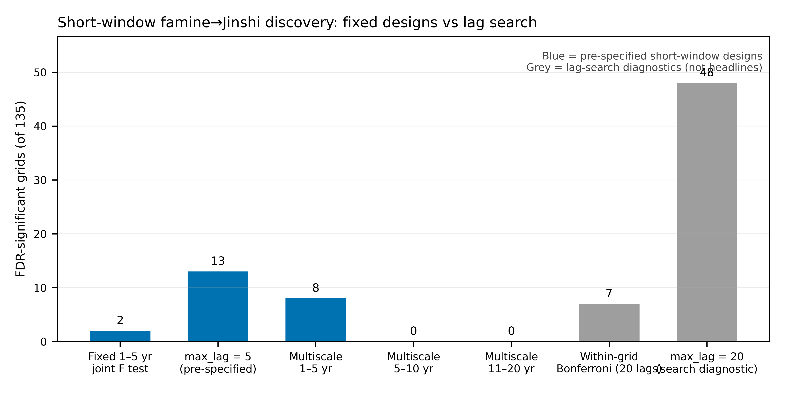

Famines and Imperial Exams in Ming China, 1521–1619
Spatial inequality in Ming elite production, and the short-window predictive signal of famine — with an explicit methodological warning about lag searching.
Spatial pattern
Famine belts follow the river basins; Jinshi concentrate in the Jiangnan core. The overlap is partial and the local association is heterogeneous.

Short-window result and methodological warning
- Fixed 1–5 year joint test: 2/135 grids; a pre-specified 5-year search window gives 13/135; multiscale LASSO gives 8/135 at 1–5 years and 0/135 at 5–10 / 11–20 years.
- 48/135 is a 20-lag search artefact (7/135 after within-grid Bonferroni). Lag estimates are bimodal, so no single median is reported.
- Common-support ±1 / ±3-year alignment passes; there is no record-intensity dose-response. A1 rank-share and A2 spillover tests are null.

data/derived/a3_main_results.csv.
PDFGWR and GeoDetector
GWR is locally significant in 123/159 grids (155 positive / 4 negative; global R² = 0.759). Famine severity is the strongest GeoDetector factor: q = 0.337 vs 0.186 (longitude) and 0.128 (latitude). The rank-encoding fix leaves GWR coefficients at r = 0.991 (122/125 significant-grid overlap).

Every number is reproduced by
python scripts/a3_assemble_main_results.py with an explicit
script → table → document chain; the claims audit is
docs/a0_claims_audit.md. The original
48/135 map and the encoding-audit Figure 5 are retained as supplementary
material only. Raw historical tables are not redistributed.
Code: MIT; historical data remain under their original terms.